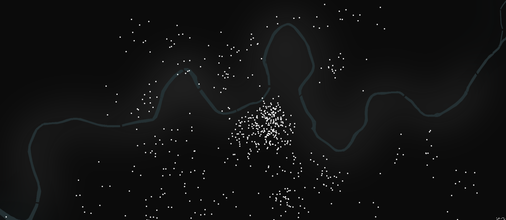

Este informe es una iniciativa conjunta de Montera34 y el Ayuntamiento de Pamplona-Iruña.
Han colaborado en la producción de este informe Ana Isabel Cordobés, Alberto Labarga, Iván Pastor, Víctor Ruiz Gómez y Xabi Urroz Zabalza. Han coordinado Alfonso Sánchez Uzábal y Pablo Rey Mazón de Montera34.